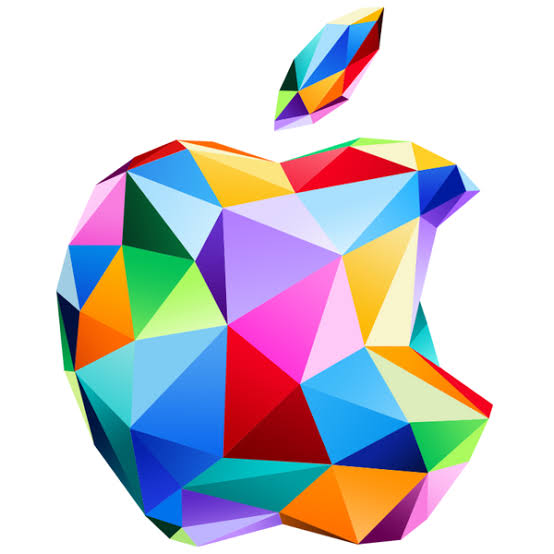
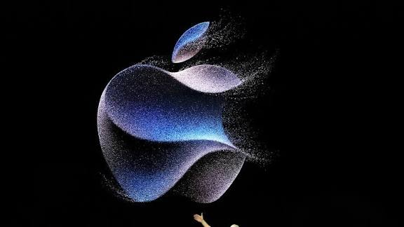

Introduzione

Il MacBook Air M2 è uno strumento pensato per semplificare, alleggerire e amplificare la creatività nella didattica.
1. Hardware e Design

- Chip M2 → fluido, silenzioso, stabile.
- Display Retina 13,6" → riduce l’affaticamento visivo.
- Peso 1,24 kg → portabilità reale.
- Tastiera e trackpad → scrittura comoda e precisa.
2. Primi Passi e Interfaccia
- Dock → app principali sempre a portata.
- Finder → file ordinati come scaffali reali.
- Spotlight → ciò che cerchi in 2 secondi.
- Mission Control → finestre organizzate con eleganza.
3. Didattica e Applicazioni
- Pages, Numbers, Keynote → produttività creativa.
- Note, Safari, GarageBand → strumenti quotidiani.
- Classroom & Schoolwork → gestione didattica guidata.
4. Sicurezza e Connettività
Touch ID, FileVault, aggiornamenti automatici e porte compatibili con LIM e proiettori.
5. Manutenzione e Supporto
Poca manutenzione e supporto continuo per docenti.
Conclusione
Il MacBook Air M2 valorizza insegnanti e studenti.